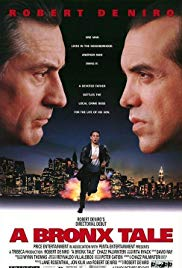
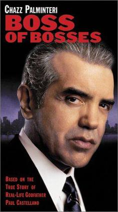

OZONE PARK
FILM SCENES
A Bronx Tale
September 29, 1993 (United States)
A Bronx Tale features a scene set at Aqueduct Racetrack in Ozone Park.
It is an American crime drama film, adapted from Chazz Palminteri's 1989 play of the same name. It tells the coming of age story of an Italian-American boy, Calogero Anello, who, after encountering a local Mafia boss, is torn between the temptations of organized crime and the values of his honest, hardworking father.

Boss of Bosses
2001
It features a scene with John Gotti in Ozone Park at the Bergin Hunt and Fish Club. Boss of Bosses is a an American made-for-TV movie about the life of former Gambino crime family boss Paul Castellano directed by Dwight H. Little. It stars Chazz Palminteri as Paul Castellano, Patricia Mauceri as his wife Nina, Mark Margolis as Joseph Armone, and Angela Alvarado as his mistress Gloria Olarte.

Goodfellas
1990
Is an Academy Award-winning gangster film that takes place in and around Ozone Park.
Goodfellas is an American crime film directed by Martin Scorsese. It is an adaptation of the 1985 non-fiction book Wiseguy by Nicholas Pileggi. The film narrates the rise and fall of mob associate Henry Hill and his friends and family from 1955 to 1980.